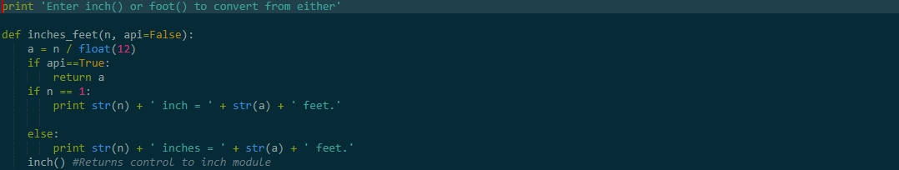
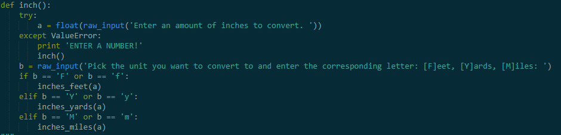
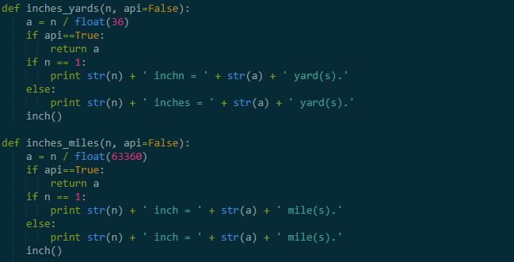

The next project was also done in python, the code was made in order to allow a user to do conversions between inches, feet, yards, and miles. As you can see in the code, there are conversions between inches, feet etc. We duplicated these codes and simply changed some numbers and changed them to suit whatever conversion the user needed.
  